OUALI & SANCHEZ
Conception d'une pièce de sécurité — Portique vertical
Étude mécanique complète d'un portique vertical en treillis bi-articulé soumis à une force F = 750 N (sujet 11A). L'objectif : identifier la barre la plus chargée en traction, concevoir et valider une pièce de sécurité capable de résister sans plastification.
Calculs de statique & RDM le Mans
PFS nœud par nœud — 5 barres — Validation par ossature
Le système est un portique vertical bi-articulé composé de 5 barres en acier S235 (e = 4 mm), soumis à F = 750 N au nœud A. En appliquant le PFS sur l'ensemble puis nœud par nœud (A → C → D), on obtient les efforts axiaux de chaque barre.
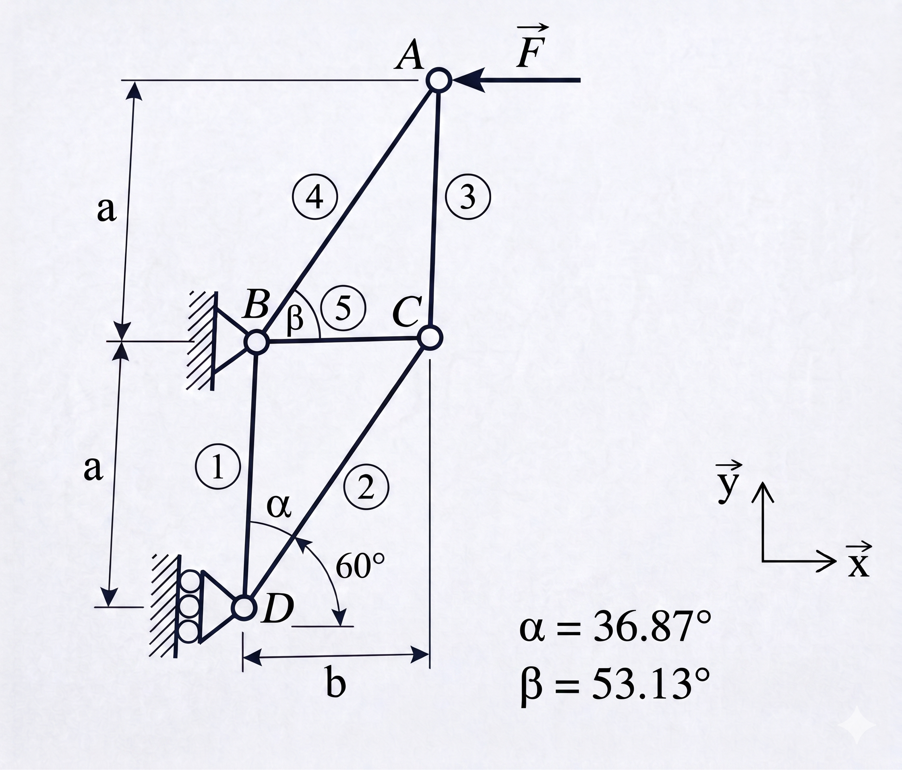
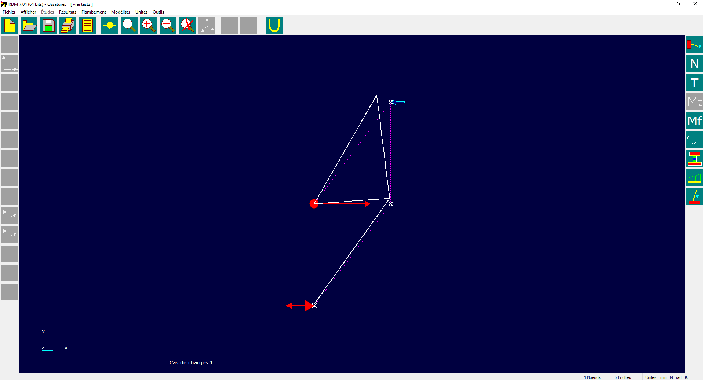
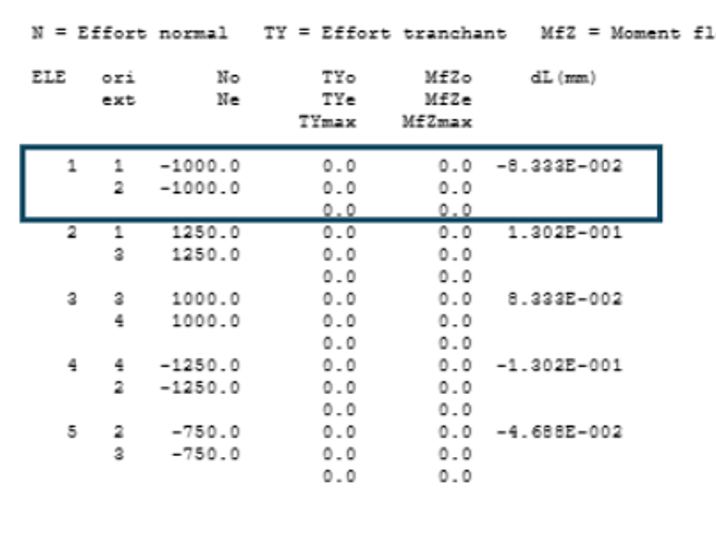
Dimensionnement des Structures (DDS)
Traction · Matage · Cisaillement · Coefficient Kt
Rpe = Re/S = 285/2 = 142,5 MPa
S ≥ |N2|/Rpe = 1249,98/142,5 = 8,77 mm²
Hc = S/e = 8,77/4 = 2,19 mm → arrondi : Hc = 3 mm
S centrale = 3 × 4 = 12 mm²
σnom = 1250/12 = 104,17 MPa < Rpe ✓
Padm = 530 MPa · Eeq = 200 000 MPa
neq = 0,175 × F × E / (L × Padm²) = 38,94 mm
Ømin = 2 × naxe_mini = 2 × 2,83 = 5,66 mm
→ Ø retenu = 6 mm ≥ 5,66 mm ✓
Rpg = Re/S = 780/3 = 260 MPa
Saxe = π×6²/4 = 28,27 mm²
τ = N2/Saxe = 1249,98/28,27
τ = 22,10 MPa < Rpg (260 MPa) ✓
Hc = 3 mm → H = d+Hc = 9 mm · d/H = 0,667 → Kt ≈ 2,1
σmax = 104×2,1 ≈ 208 MPa ❌ > Rpe
Itération Hc=5 mm → H=11 mm · d/H=0,545 → Kt ≈ 2,17
σmax = (1250/20)×2,17 ≈ 134 MPa < Rpe ✓
Treillis — extrémité : d/l=6/12=0,5 → Kt ≈ 2,7
σmax = (1250/24)×2,7 ≈ 140,6 MPa < Rpe ✓
ΔL₂ = N₂ × L₂ / (E × S) = 1249,98 × 300 / (200 000 × 12) = 0,15 mm — valeur trop faible pour influer sur le reste de la SAÉ, mais calculée pour la DDS.
Modélisation CAO & Mises en plan
Éprouvette d'essai + Treillis N2 — SolidWorks
Nous avons modélisé deux pièces sur SolidWorks : l'éprouvette d'essai (avec trou central Ø6) et la biellette de liaison N2 (treillis réel). Les dessins de définition respectent les règles de cotation ISO avec cotes bi-limites, tolérances et spécifications géométriques.
- Longueur : 140 ±0,5 mm
- Zone centrale : 69,5 + 55,5 mm
- Hc = 5,5 mm · R14,5
- Ø6 ±0,1 · e = 4 mm
- Longueur : 300 ±0,05 mm
- R15,00 · Hc extrémité = 6 mm
- Ø6 ±0,1 · R6 +0,5/0,0
- Objectif : ratio rigidité/masse max
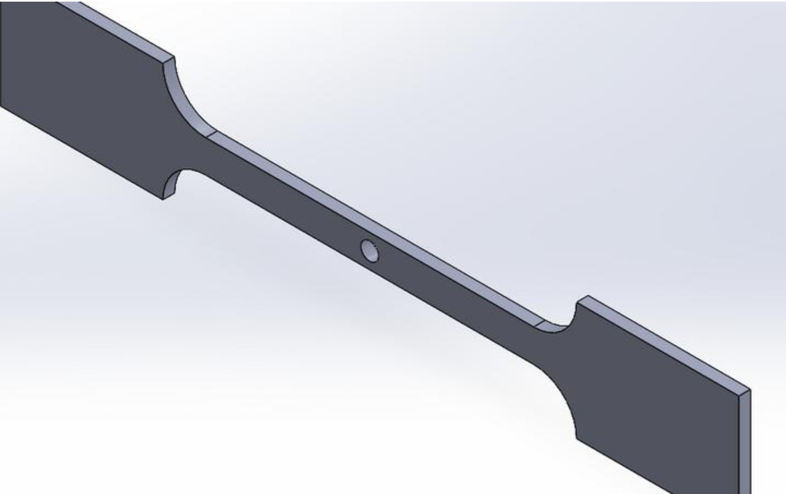
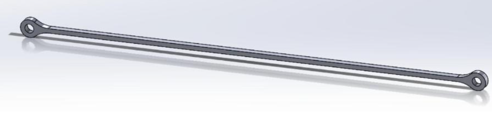
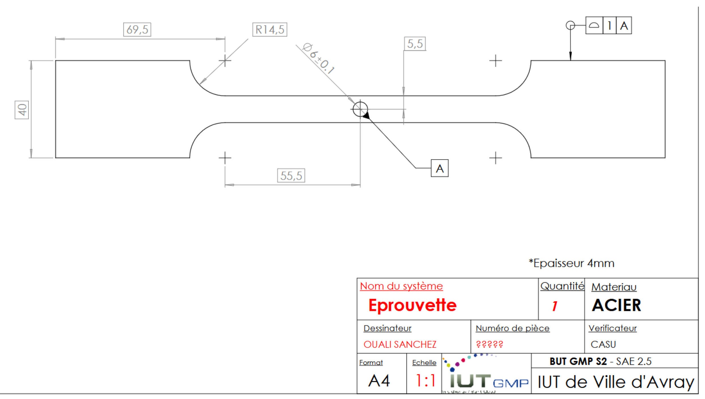
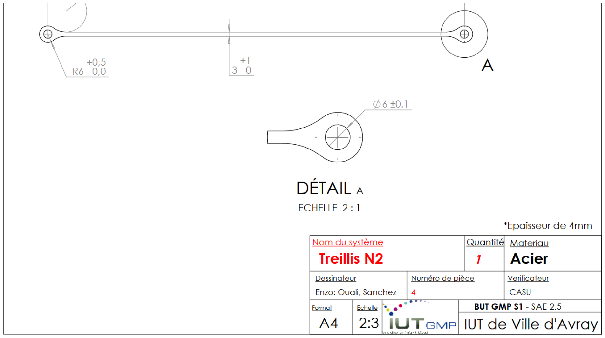
Découpe laser CypCut & Fiche de contrôle
Panoplie TD — CUM 49% — Contrôle métrologique
Deux fichiers CypCut ont été créés : un fichier pièce seule pour paramétrer les entrées/surépaisseurs, et un fichier panoplie incluant toutes les éprouvettes du TD. Notre panoplie a été sélectionnée pour la découpe réelle.
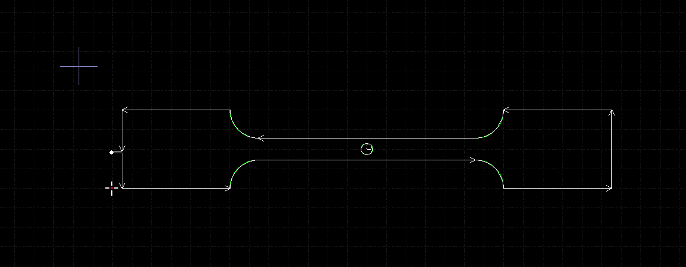
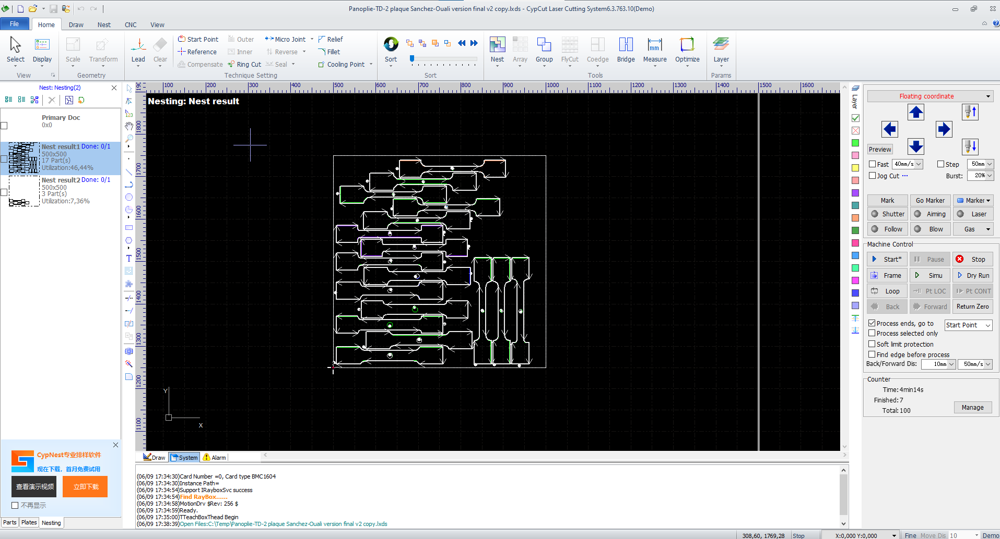
Essai de traction & interprétation
Banc RDM — Éprouvette sans trou vs avec trou — Graphe σ/ε
Après découpe laser et ébavurage, les éprouvettes ont été testées en laboratoire RDM. Deux essais comparatifs : une éprouvette sans trou (référence — même module de Young) et notre éprouvette avec trou pour obtenir le graphe contrainte/déformation combiné.
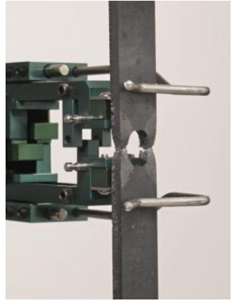
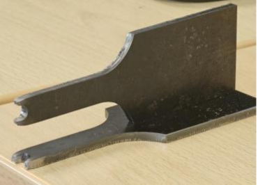
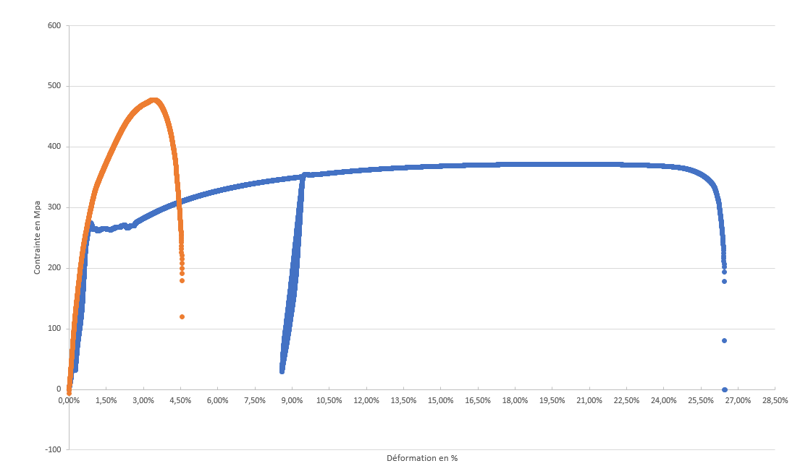
Simulation SolidWorks VS Calcul
4 zones analysées — Écart max 16% au trou du treillis
Un tableur Excel réunit toutes les valeurs pour simplifier les calculs répétitifs et générer les graphes de comparaison. La simulation SolidWorks a été réalisée à différents niveaux d'effort (250 N à 5000 N) sur 4 zones.
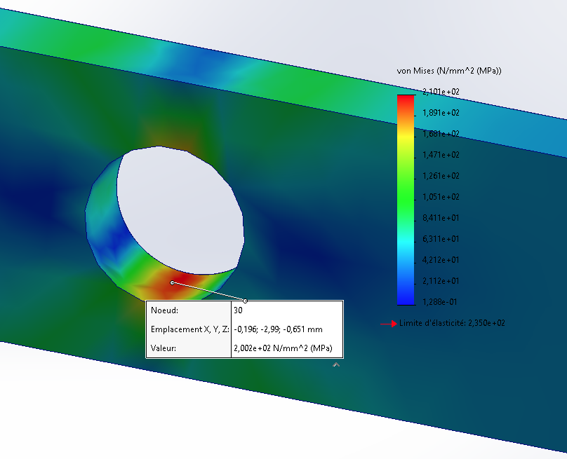
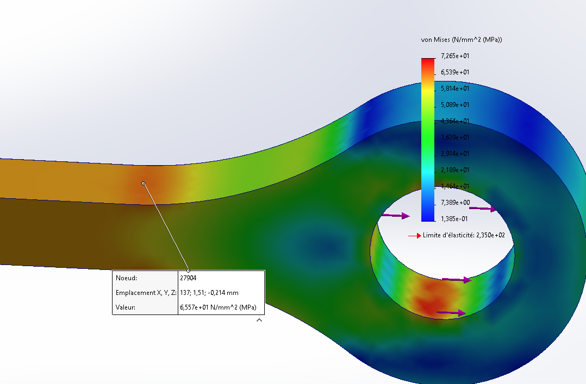
Synthèse calcul vs simulation — 4 zones
L'éprouvette et la section centrale donnent des résultats quasi-identiques (0–1%). L'écart de 16% au trou du treillis est probablement dû à une imprécision dans la lecture des abaques pour le Kt — une valeur Kt = 2,27 au lieu de 2,7 suffirait à annuler l'écart.
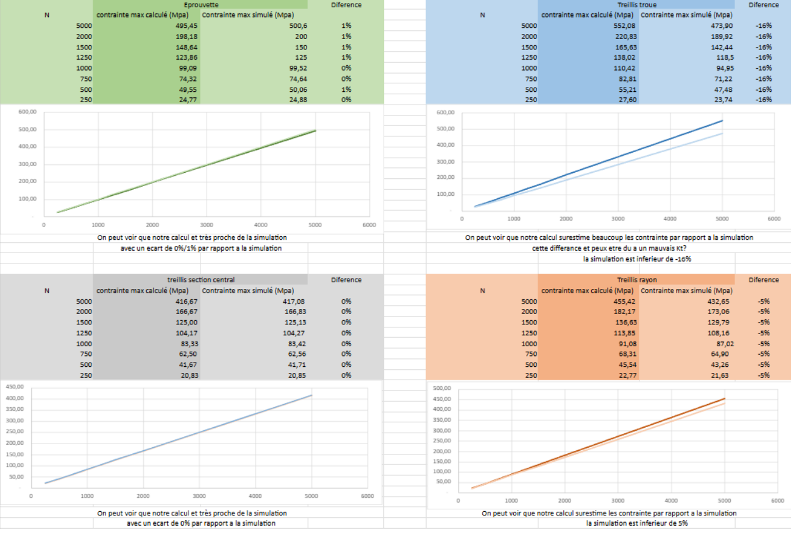
Journal de bord
5 séances d'autonomie
- Calcul manuscrit — expressions littérales et applications numériques
- Utilisation de RDM le Mans et convergence des résultats
- Étude DDS sur la pièce d'essai
- Croquis cotés et commentés des 2 pièces
- Diaporama de convergence déposé sur le réseau
- Finalisation CAO et dessins de définition des 2 versions
- Personnalisation du cartouche et choix des vues
- Intégration cotes bi-limites, tolérances et spécifications géométriques
- Dépôt des 4 fichiers CAO sur le réseau
- Réalisation de la panoplie pour la découpe (TD et TP)
- Comparaison de l'utilisation de matière entre configurations
- Finalisation du fichier de découpe individuel au format LXD
- Rédaction de la fiche de contrôle qualité numérisée
- Rassemblement des fichiers pour la mise en bande globale du TD
- Optimisation et calcul du CUM
- Rapport final de la SAÉ
Annexe — Tous les documents
Téléchargement de l'ensemble des livrables
Ce que j'ai appris
Cette SAÉ m'a littéralement fait un déblocage sur la compréhension du dimensionnement des structures. J'ai pu développer mes compétences en calcul de contraintes (matage, nominal, Kt) et en analyse de résultats simulés vs calculés. La démarche complète — de l'étude statique jusqu'à la pièce réelle testée sur banc — consolide une méthodologie d'ingénierie structurée et rigoureuse.